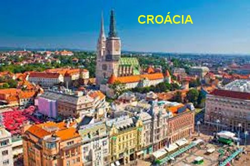
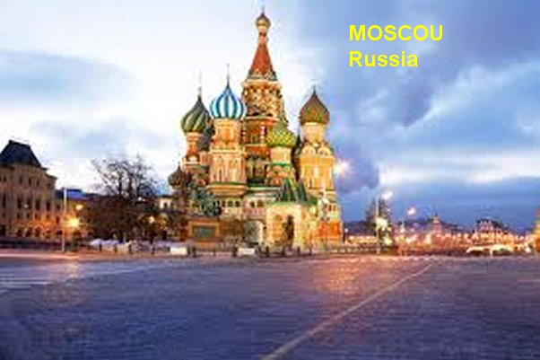
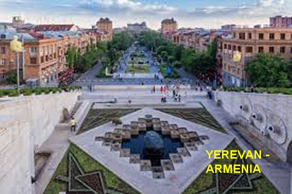
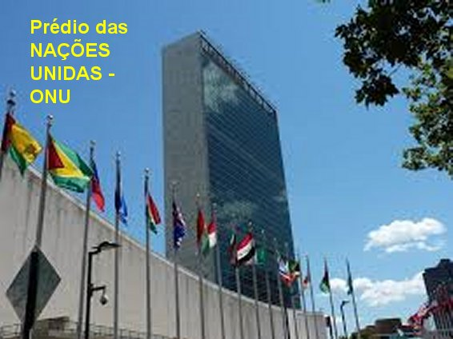

“ALARGANDO AS FRONTEIRAS DA CARIDADE”
A CONGREGAÇÃO MISSIONÁRIA NA
CROÁCIA 
A Casa das Irmãs em Zagreb (atual Capital da Croácia) oficialmente não existia porque a Iugoslávia de Tito ainda era comunista e não havia dado autorização. Por isso, Madre Teresa queria conversar com o Ditador. Por outro lado, como muitas vezes acontecia, em consequência dos acontecimentos, a etapa seguinte da viagem não estava ainda bem planejada. Era possível prosseguir para Varsóvia, capital da Polônia. Padre Leo então nos descreve:"Pequei um taxi e fui para o centro da cidade a fim de comprar duas passagens de avião para Varsóvia. Tive que enfrentar uma fila de quase 20 metros, que me fez esperar uma hora e meia, até conseguir as duas passagens. Assim que voltei, Madre Teresa me chamou e disse": “Padre, lamento muito, mas não vamos mais para Varsóvia, temos que voltar a Munique (na Alemanha). Pode ver se consegue trocar as passagens, por favor?" Lá fui eu de volta ao centro da cidade e fiquei mais 40 minutos numa fila enorme. Com um pouco de conversa e as necessárias explicações, consegui trocar as duas passagens para Munique. Com elas na mão, voltei rápido e encontrei as Irmãs nas Orações do meio-dia. Quando as Irmãs saíram da Capela encontrei a Madre, e lhe mostrei as passagens. Ela estava séria e pensativa, e disse: “Padre, lamento muito mesmo, mas temos de ir mesmo é para Varsóvia! Ainda podemos trocar as passagens?” O Padre Leo conta:“Despedi-me dela e rapidamente voltei à cidade. Tive que esperar numa fila e engolir alguns comentários sarcásticos. Mas consegui trocar as passagens para Varsóvia e voltar a tempo de nos prepararmos para seguirmos para o aeroporto, pois o avião ia decolar às dezessete horas. Ao mesmo tempo, confesso que me sentia até meio orgulhoso, por ter feito todas aquelas trocas sem ter perdido um centavo de dinheiro”.
Quando finalmente me sentei ao lado de Madre Teresa no avião, não consegui conter uma observação maliciosa: “Madre Teresa, aprendi hoje o que as letras MC significam na realidade: não só “Missionárias da Caridade”, mas MC significa “muita confusão”.
Com um sorriso indescritivelmente encantador, Madre Teresa virou-se para mim e disse: “E sabe o que mais querem dizer? Também querem dizer: “Mais Confusão”, “Maluco da Cabeça”, “Mudança Constante”... E ficamos rindo de toda aquela embrulhada.
AS MISSIONÁRIAS DA CARIDADE NA RÚSSIA

Ainda no ano 1986, quase ninguém na União Soviética, ouvira falar de Madre Teresa. Em Julho de 1987, as duas diretoras cinematográficas irmãs, Ann Petrie e Jeanette Petrie apresentaram o documentário: “Mother Teresa the Legacy” (O Legado de Madre Teresa), no Festival de Cinema em Moscou, que recebeu um longo aplauso público e ganhou o prêmio “Comitê Soviético para a Paz”. Então correu por todos os lados a pergunta: “Por que aquela pequenina mulher, que viajava por todo o mundo e fazia coisas tão extraordinárias, nunca havia estado na União Soviética?” A resposta era simples: “Nunca ninguém a tinha convidado”.
Mas a oportunidade de ter ganhado o prêmio da Paz, instituído pelos Russos, surgiu à oportunidade concreta e Madre Teresa foi convidada. Ela aceitou e imediatamente cuidou do visto e dos documentos necessários. A diretora cinematográfica Jeanette Petrie, uma grande colaboradora das Irmãs, organizou a viagem. Como companheira de viagem, Madre Teresa levou uma linda imagem de NOSSA SENHORA com 70 centímetros de comprimento. Assim, com a estátua nos braços, em 19 de Agosto de 1987, Madre Teresa foi a Moscou pela primeira vez, para receber o “Prêmio do Comitê Soviético para a Paz”. Os funcionários soviéticos aproveitando a festa de homenagem quiseram também envolvê-la sob o ponto de vista político. Madre Teresa, entretanto, nunca se deixava envolver em questões políticas. No seu discurso de agradecimento manifestou sua vontade caridosa: “Não tenho ouro e nem prata (repetindo as palavras de São Pedro), mas o que tenho, ofereço aos povos da União Soviética: são minhas Irmãs Missionárias que lhes ofereço com fraternal prazer”. E assim, ela deu inicio a algo que até então, ninguém nunca imaginou ser possível: “Oferecer JESUS aos mais pobres dos pobres, na Rússia, coração do comunismo universal”.
Passou mais de um ano até ser liberado os vistos para as Irmãs entrarem na Rússia. Finalmente em 15 de Dezembro de 1988, Madre Teresa, Irmã Mala (designada a Provincial da Comunidade Religiosa em Moscou), a senhora Jeanette Petrie, mais quatro Irmãs da Comunidade e o Padre Leo, viajaram para Moscou, todos devidamente documentados e autorizados pelo Vaticano. Madre Teresa disse: “Pedi a NOSSA SENHORA que nos oferecesse uma Casa na União Soviética por cada Mistério do Rosário”. Hoje, dez anos depois, já existem cerca de “20 Casas das Missionárias da Caridade” em diversas cidades da Rússia. Em 25 de Agosto de 1997, duas semanas antes da morte de Madre Teresa, Padre Leo concluía em Moscou, um Retiro Espiritual para todas as Madres Superioras das Comunidades Missionárias da Rússia. Cada Comunidade Religiosa Missionária usa ainda hoje, o nome de um dos Mistérios do Terço. (O Terço como foi concebido tinha 15 Mistérios; na atualidade, foram acrescentados mais 5 Mistérios Luminosos pelo Papa João Paulo II. Então são 20 Mistérios). Significa dizer, que NOSSA SENHORA, MÃE DE JESUS E NOSSA MÃE SANTÍSSIMA, atendeu exatamente a solicitação de Madre Teresa.
Assim como em todos os lugares em que se fundava uma Comunidade de Caridade, também na Rússia a primeira preocupação de Madre Teresa foi organizar uma Capela com um Sacrário numa das três salas provisórias colocadas à disposição dela, no sétimo andar do Hospital Bolsheviskaya. As últimas Palavras de JESUS na Cruz “TENHO SEDE”, podem ser lidas em todas as Capelas das Irmãs na Rússia, bem embaixo do braço direito da imagem de JESUS Crucificado. Este nome acrescentado as Capelas, explica também a razão de Madre Teresa querer levar com as Irmãs, até o centro do ateísmo: “o anseio amoroso de DEUS e a sua sede de amar e ser amado, que não são limitados por fronteiras políticas, nem culturais ou estatais”.
Um “mar de miséria” era constante na União Soviética. Agravou-se em Dezembro de 1988, com um terrível tremor de terra na Armênia, acontecendo grande destruição de edifícios e matando mais de 30 mil pessoas. As regiões de Spitak e Leninakan (hoje Gjumri) foram especialmente atingidas. A “Casa da Congregação” em Moscou ainda não estava totalmente pronta, mas Madre Teresa aceitou o convite do representante do Comitê Armênio para a Paz, e preparou-se para enfrentar o sério problema.
Foi uma partida precipitada.
Madre Teresa, quatro Irmãs e o Padre Leo permaneceram horas no aeroporto de
Scheremetievo em Moscou, por causa de uma imensa 
O serviço era grande; por isso a assistência das Irmãs não tinha tréguas. Da mesma forma, os médicos e as enfermeiras do Hospital, naquelas primeiras semanas, atendiam os necessitados até de madrugada. O terremoto que aconteceu pouco antes do Natal além de ter ceifado muitas vidas, deixou também muitas pessoas traumatizadas, feridas e com variados problemas de saúde. Havia casos difíceis e outros insuperáveis. Quando uma criança estava para morrer, as jovens médicas que trabalhavam no Hospital faziam sinal ao Padre Leo, que estava no 7º andar, batendo com o salto do sapato na porta. Se a criança estivesse no 3º andar, batia três vezes com força; se estivesse no 5º andar batia cinco vezes com força. Ele ia imediatamente e Batizava a criança. E naquele mundo pagão, onde havia poucos cristãos, ele Batizou muitas crianças e até adultos em emergência de morte. Por outro lado, o cuidado das Irmãs produzia um efeito admirável na recuperação das crianças, ocorrendo até curas inexplicáveis. A presença das Irmãs foi uma graça Divina.
Depois de vários meses de intenso trabalho, com a normalização da região afetada pelo terremoto e com o Hospital Pediátrico com a missão quase totalmente cumprida, Madre Teresa, as Irmãs e o Padre Leo se prepararam para retornar a Moscou. E assim, despedindo-se de todos, numa última oportunidade, na Rua Padre Leo olhou para o prédio do Hospital de Yerevan, e sentiu as lágrimas descerem pela lateral dos olhos, enquanto no seu pensamento um volume de cenas e informações afluía em cascata. Pensava ele: “Foi certamente, o período mais penoso da minha vida, mas ao mesmo tempo, o mais bonito, em que com muita certeza, mais vezes me encontrei com JESUS, e mais vezes pude aliviar a SUA DIVINA SEDE. Tudo isto, fundamentalmente ajudado pelo maravilhoso exemplo de Madre Teresa e das Irmãs da Caridade”.
NAS NAÇÕES UNIDAS

Madre Teresa se dirigiu para o púlpito no salão da Assembléia Geral e começou o seu discurso: “Estamos aqui reunidos para agradecer a DEUS pelos quarenta anos de trabalho maravilhoso que as Nações Unidas desenvolveram para o bem das pessoas. E porque começamos o Ano da Paz, rezemos a Oração pela Paz, pois as obras do amor são as obras da paz. Rezemos juntos para que possamos alcançar a paz e para que DEUS nos conceda a paz quando todos nos tornamos um só”.
E logo se tornou a porta-voz da Oração, no meio daquele salão da política mundial e da intriga global: “SENHOR, tornai-nos dignos, para que, em todo o mundo, possamos servir os nossos irmãos que vivem e morrem na pobreza e na fome. Daí-lhes hoje, pela nossa mão, o pão de todos os dias e, através do nosso amor compassivo, concedei paz e alegria. SENHOR faça de mim um instrumento de VOSSA Paz; onde houver ódio, que eu leve o amor; onde houver discórdia que eu leve a união; onde houver dúvidas, que eu leve a fé; onde houver erros, que eu leve a verdade; onde houver ofensa, que eu leve o perdão; onde houver desespero, que eu leve a esperança; onde houver tristeza, que eu leve a alegria; onde houver trevas, que eu leve a luz. Ó MESTRE, fazei com que eu procure mais consolar, que ser consolado; compreender, que ser compreendido; amar, que ser amado; pois é dando que se recebe; é perdoando, que se é perdoado; e é morrendo que se vive para a Vida Eterna. Amém”.
Foi com essa oração de São Francisco de Assis, que ela começou o discurso. E depois deu, aos políticos e diplomatas ali reunidos, uma lição de catequese, na qual, como sempre, apontava não para si, mas para JESUS: “Peçamos a NOSSO SENHOR para fazer de nós instrumentos da paz, do amor e da unidade. Foi para isso que JESUS veio, para dar testemunho desse amor. DEUS amava tanto este mundo que enviou JESUS, SEU FILHO, para que ELE viesse até nós e nos trouxesse a Boa-Nova de que DEUS nos ama. Esse é o SEU desejo: que nos amemos uns aos outros, como ELE ama cada um de nós. ELE nos concebeu por uma única razão: para que amemos e sejamos amados. Por mais nenhuma outra razão. Não somos apenas um número neste mundo. Nós somos filhos de DEUS”.
Alguém da Comitiva Chinesa lhe perguntou: “O que é um comunista para você?”
Ela respondeu: “Um filho de DEUS, um irmão meu, uma irmã minha”.
E continuando o seu discurso disse: “É precisamente para isto que estamos aqui, os senhores e eu: para sermos irmãos e irmãs. Porque foi a mesma mão amorosa de DEUS que nos fez, a você e a mim, ao morador de rua, bem como os leprosos, os famintos, os ricos, pela mesma razão: para amar e ser amado. Foi para isso que nós nos reunimos hoje, para descobrirmos o significado da paz”.
Ela também colocou o aborto em evidência dizendo: “O aborto é um dos maiores destruidor da paz familiar. A família, meus prezados é dom de DEUS. Nós não podemos resolver todos os problemas do mundo, mas evidentemente nunca devemos nem pensar em ajudar a se concretizar o maior problema de todos, que é destruir o amor. E é justamente o que acontece quando aconselhamos as pessoas a praticarem a contracepção e o aborto."
E por fim, ela faz um apelo aos Delegados das Nações ali reunidos: “Tomemos hoje uma importante resolução em nosso coração: eu quero amar. Eu quero ser portador do Amor de DEUS. Amemos, pois, partilhemos uns com os outros, oremos para que este horrível sofrimento dos nossos semelhantes desapareça. Refiro-me a todas as formas de sofrimento que atinge a humanidade. Eu vou rezar por vocês, para que todos possam crescer neste amor de DEUS, para que vocês se amem uns aos outros, como ELE ama cada um individualmente e, sobretudo, para que vocês se tornem Santos por meio deste amor”.
“A Santidade não é luxo de uns poucos. É simplesmente um dever de cada um de nós. Porque a santidade traz o amor, e o amor traz a paz, e a paz nos une. Não tenhamos medo, porque DEUS está conosco quando lhe damos licença para isso, quando lhe oferecemos a alegria de um coração puro”.
Ela concluiu o seu discurso na ONU com o seguinte pensamento: “A Oração nos proporciona um coração puro verdadeiramente. Com um coração puro podemos ver DEUS em todos os indivíduos, e quando vemos DEUS nos outros, então somos capazes de viver em paz; e quando vivemos em paz, somos capazes de partilhar com todas as pessoas a alegria do amor, e DEUS estará conosco”.
Quando terminou a sua intervenção perante as Nações Unidas, foi calorosamente aplaudida. Por último, depois de ter recusado um banquete que lhe ofereceram, para angariar dinheiro para os seus pobres, agradeceu e voltou de carro para Washington para sua “Casa da Misericórdia”.